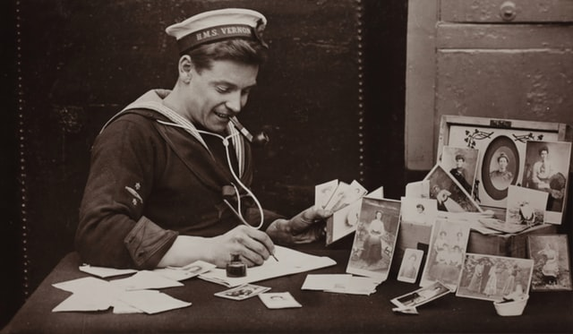

On this day
Mar 29, 1944
Black Minister, Lynched for Land,
Laid to Rest in Mississippi

Image | none
On March 29, 1944, mourners gathered at the funeral of Rev. Isaac Simmons, three days after he was lynched in Amite County, Mississippi.
Before his death, Rev. Simmons controlled more than 270 acres of debt-free Amite County land that his family had owned since 1887. This was very unusual among black families in the South, where racism and poverty had posed obstacles to economic advancement for generations. A farmer and minister, Rev. Simmons worked the land with his children and grandchildren, producing crops and selling the property’s lumber.
In 1941, a rumor spread that there was oil in southwest Mississippi. A group of six white men decided they wanted the Simmons’ land and warned Rev. Simmons to stop cutting lumber. Rev. Simmons consulted a lawyer to work out the dispute and ensure his children would be the sole heirs to the property.
On Sunday, March 26, 1944, a group of white men arrived at the home of Rev. Simmons’s eldest son, Eldridge, and told him to show them the property line. He agreed to do so, but while Eldridge Simmons rode with the men in their vehicle, they began to beat him, and shouted that the Simmons family thought they were “smart niggers” for consulting a lawyer. The men then dragged Rev. Simmons from his home about a mile away and began beating him, too. They drove both Simmons men further onto the property and ordered Rev. Simmons out of the car, then killed him brutally–shooting him three times and cutting out his tongue. The men let Eldridge Simmons go, but told him he and his relatives had ten days to abandon the family property.
During the era of racial terror, white mobs regularly terrorized black people with violence and murder to maintain the racial hierarchy and exert economic control. These acts of lawlessness were committed with impunity, by mobs who rarely faced arrest, prosecution, or even public shame for their actions. Black people could expect little protection from law enforcement and knew that protesting their own abuse or a loved one's lynching could result in even more violence and death.
After Eldridge and the rest of the Simmons family buried Rev. Simmons, they fled their land in fear. The white men who committed the lynching took possession of the land; only one of the six men was ever prosecuted for the murder, and he was ultimately acquitted by an all-white jury.